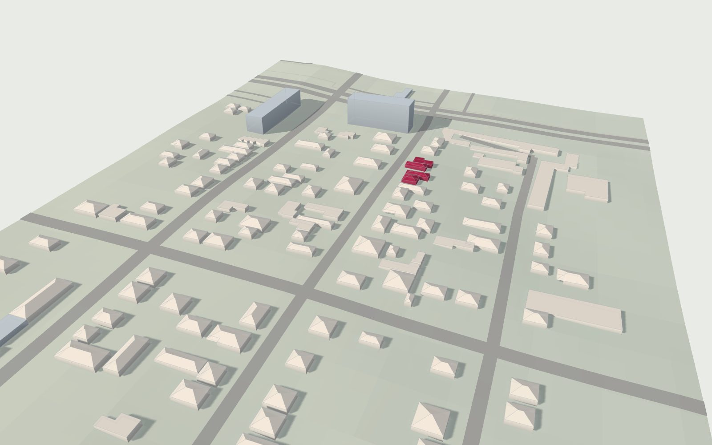

Street View · 10.2011
Подпись адреса в Street View — ближайшая метка карты. Видимый фасад может стоять на другой стороне улицы, поэтому заметки задают зоны стиля, а не доказывают принадлежность участка.
Как Заречная собирается заново: масштаб проекта, 3D-квартал в браузере, прогулка по улице, панорамы октября 2011 года и план улицы.

Проект растёт кольцами. Сначала один дом, сверенный с панорамой, потом играбельный коридор, квартал, эталонная карта центра и, в конце, весь Донецк. Каждое кольцо использует те же координаты, так что ничего не приходится переделывать.
Настоящие данные проекта, собранные прямо в браузере: 189 контуров OSM, рельеф SRTM и улицы квартала 280 × 660 м. Покрути, приблизь, нажми на любой дом и узнай, что о нём известно, а что пока оценено.
Браузер не поддерживает WebGL, поэтому здесь показан рендер квартала.
Тяни, чтобы вращать · колесо для масштаба · Shift или правая кнопка для сдвига · малиновые цифры открывают панорамы 2011
Данные: 189 контуров © OpenStreetMap (ODbL), рельеф NASA SRTM, линии OSM на июль 2011 года. Всё собрано из файла quarter.json проекта. Подробная геометрия этюда у дома 33 есть только в Unreal.
Листай вниз и иди по улице от дома 33 до проспекта Лагутенко. Каждая остановка стоит там, где в октябре 2011 года снимала камера панорамы. Виды из 3D-модели квартала, текст из заметок исследования.
Я прошёл Заречную по панорамам октября 2011 года в обе стороны и записал только то, что видно в кадре. Пиксели Google в игру не попадают. Каждая точка ниже открывает оригинальную панораму 2011 года в Google Maps.
Подпись адреса в Street View — ближайшая метка карты. Видимый фасад может стоять на другой стороне улицы, поэтому заметки задают зоны стиля, а не доказывают принадлежность участка.
Исследовательский план улицы: коридор 210 м с 19 участками по адресам 25–38, записанный по панорамам 2011 года. Цвет показывает тип уличного фасада. В Unreal этот коридор уже вырос до квартала 280 × 660 м. Нажмите на участок.
Радарная съёмка 11–22.02.2000, сетка 62 × 93 м. Грубая поверхность: бордюры, водостоки и изменения к 2011 году пока не восстановлены.